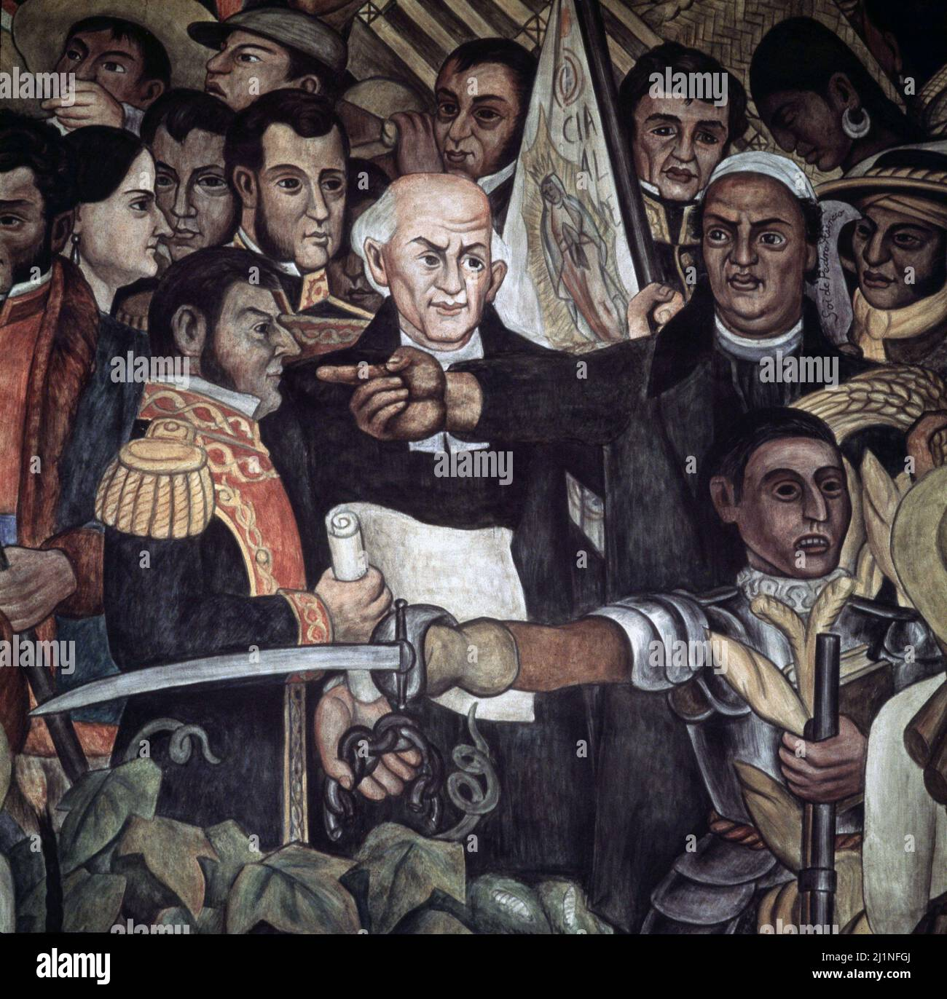
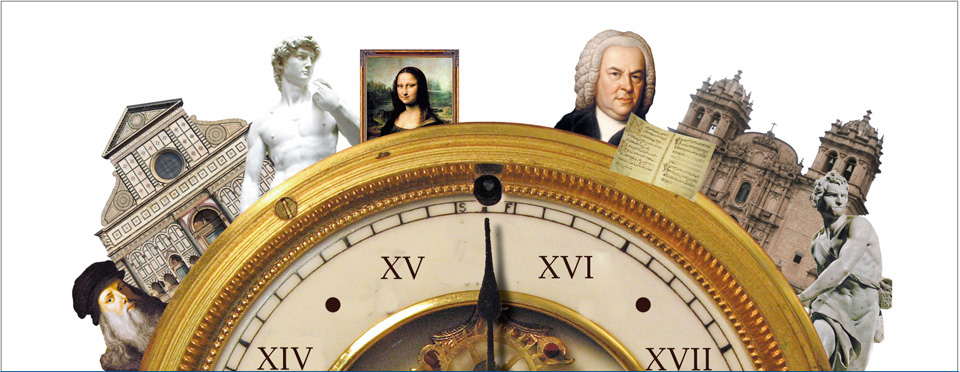

conociendo nuestro pasado para comprender nuestro presente
¿Que es la conciencia historica
la conciencia historica es la capacidad de conover,
comprender y reflexionar sobre los acontecimientos del pasado
para enteder mejor nuestro presente.
Atraves de la historia podemos conocer las costumbres,
tradiciones, culturas de formas de visda de las personas
que vivieron antes que nosotros.
IMPORTACIA DE LA CONCIENCIA HISTORICA
La hsitoria es importante por que nos ayuda a conocer nuestros origenes
y comprender como ha cambiado la sociedad con el paso del tiempo.
Nos permite conocer nuestras raices.
Ayuda a valorar nuestra cultura y tradiciones.
Nos enseña a aprender de los errores del pasado
Permite comprender los problemas actuales
Fomenta el respeto por nuestras culturas
ACONTECIMIENTOS HISTORICOS IMPORTANTES
En la siguiente tabla se muestran algunos acontecimientos
historicos mas importantes.
Acontecimientos
Fecha
Descrpcion
Independecia de México
1810-1821
México consiguio su Independecia de España
Revolución Mexicana
1910
Movimiento que busco cambios politicos y sociales
llegada a la luna
1969
Los primeros seres humanos caminaron sobre la luna
Caida del Muro de Berlin
1989
Represento importantes cambios politicos en Europa

VIDEO EDUCATIVO
PERSONAJES HISTORICOS
Personaje
Época
Aportacion
Miguel Hidalgo y Costills
Independecia
Incio el movimiento de Independecia en 1810
Benito Juárez
Siglo XIX
Promovió las Leyes de Reforma.
Francisco I. Madero
Revolución Mexicana
Defendió la democracia y el derecho al voto.
LA IMPORTACIA DE LA HISTORIA
ALGUNAS RAZONES PARA ESTUDIARLA SON:
Conocer nuestros orígenes y nuestras raíces.
Comprender cómo han cambiado las sociedades a través del tiempo.
Valorar nuestra cultura, tradiciones y costumbres.
Aprender de los errores y aciertos del pasado.
Comprender los acontecimientos que suceden en la actualidad.
Reconocer a los personajes que contribuyeron a nuestra sociedad.
Respetar las diferentes culturas y formas de vida.
Fortalecer nuestra identidad como mexicanos.
Conocer cómo surgieron nuestros derechos y libertades.
Desarrollar el pensamiento crítico al analizar los hechos históricos.
Conservar la memoria histórica de nuestros antepasados.
Evitar que se repitan algunos errores del pasado.
Comprender las causas y consecuencias de los conflictos históricos.
Valorar los avances científicos, tecnológicos y sociales.
Participar de manera responsable en la sociedad.
LINEA DEL TIEMPO
La linea del tiempos nos permite ordenar los acontecimientos
historicos desde los mas antiguos hasta los mas recientes
180:Incio de Independencia de Mexico
1821:Consumacion de la Independecia de Mexico
1910:Inicio de la Revulucion Mexicana
1969: Llegada del ser humano a la Luna.
1989: Caída del Muro de Berlín.

AUDIOS HISTORICOS
escucha el audio relacionado con la historia
LOS MUSEOS Y LA HISTORIA
Los museos son espacios dedicados a conservar, investigar
y mostrar objetos que tienen importancia histórica y
Gracias a ellos podemos conocer cómo vivían las personas
en diferentes épocas.
En México existen museos que presentan documentos,
pinturas, objetos arqueológicos y testimonios
acontecimientos importantes para nuestro país.
Visitar estos lugares nos ayuda a comprender mejor
nuestro pasado.
En internet podemos encontrar diferentes páginas que
nos ayudan a investigar los acontecimientos históricos.
Los siguientes enlaces permiten conocer más sobre
la historia de México y del mundo.
1. Cultura Maya
La civilización maya destacó por sus conocimientos
de matemáticas, astronomía, escritura y arquitectura.
Sus aportaciones siguen siendo importantes en la actualidad.


.webp)